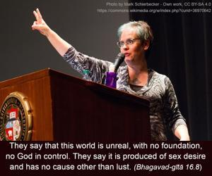
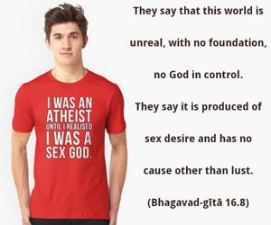
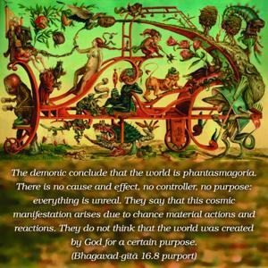
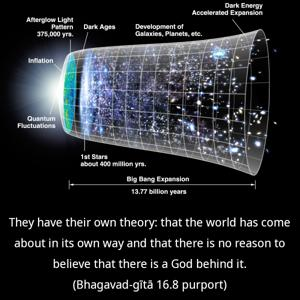

They say that this world is unreal, with no foundation, no God in control. They say it is produced of sex desire and has no cause other than lust.




The demonic conclude that the world is phantasmagoria. There is no cause and effect, no controller, no purpose: everything is unreal. They say that this cosmic manifestation arises due to chance material actions and reactions. They do not think that the world was created by God for a certain purpose. They have their own theory: that the world has come about in its own way and that there is no reason to believe that there is a God behind it. For them there is no difference between spirit and matter, and they do not accept the Supreme Spirit. Everything is matter only, and the whole cosmos is supposed to be a mass of ignorance. According to them, everything is void, and whatever manifestation exists is due to our ignorance in perception. They take it for granted that all manifestation of diversity is a display of ignorance, just as in a dream we may create so many things which actually have no existence. Then when we are awake we shall see that everything is simply a dream. But factually, although the demons say that life is a dream, they are very expert in enjoying this dream. And so, instead of acquiring knowledge, they become more and more implicated in their dreamland. They conclude that as a child is simply the result of sexual intercourse between man and woman, this world is born without any soul. For them it is only a combination of matter that has produced the living entities, and there is no question of the existence of the soul. As many living creatures come out from perspiration and from a dead body without any cause, the whole living world has come out of the material combinations of the cosmic manifestation. Therefore material nature is the cause of this manifestation, and there is no other cause. They do not believe in the words of Kṛṣṇa in Bhagavad-gītā, mayādhyakṣeṇa prakṛtiḥ sūyate sa-carācaram: “Under My direction the whole material world is moving.” In other words, among the demons there is no perfect knowledge of the creation of the world; every one of them has some particular theory of his own. According to them, one interpretation of the scriptures is as good as another, for they do not believe in a standard understanding of the scriptural injunctions.